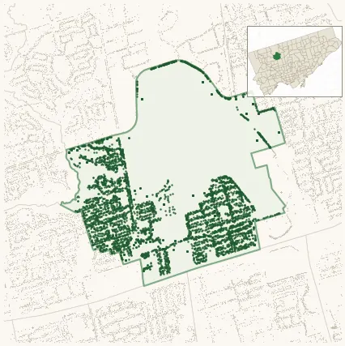

Neighbourhood · #155
Downsview
Neighbourhood Improvement Area 5,992 street trees · 2.11 km² · pop. 17,970

What the numbers say
Downsview is middle-of-the-pack for street trees (136th of 158), with 5,992 city-owned street trees across 2.11 km² — 2,841 per km².
Tree canopy covers 8.3% of the neighbourhood (154th of 158) — up 2.9 points since 2008. (This includes all trees — street, park, and private — from the 2018 land-cover raster.)
Across 175 distinct species (Shannon diversity 4.29, 11th of 158), the most common is gleditsia triacanthos at 5.4% of the trees.
Most common species here
| Species | Trees | Share |
|---|---|---|
| Honey Locust gleditsia triacanthos | 321 | 5.4% |
| Colorado Blue Spruce picea pungens | 311 | 5.2% |
| Norway Maple acer platanoides | 309 | 5.2% |
| Honey Locust Skyline gleditsia triacanthos f. inermis 'skyline' | 237 | 4.0% |
| Kentucky Coffeetree gymnocladus dioicus | 197 | 3.3% |
The biggest tree on record
A Serviceberry (amelanchier canadensis) at 266 CORNELIUS PKWY — 146 cm DBH, the largest of the 5,992 street trees here. · Street View
Explore
Tree counts and species from the City of Toronto Street Tree dataset (city-owned trees in the road allowance only — not parks or private property). Canopy % and heat proxy derive from the 2018 land-cover raster. Population is from the 2021 census, joined by the 158-neighbourhood model.